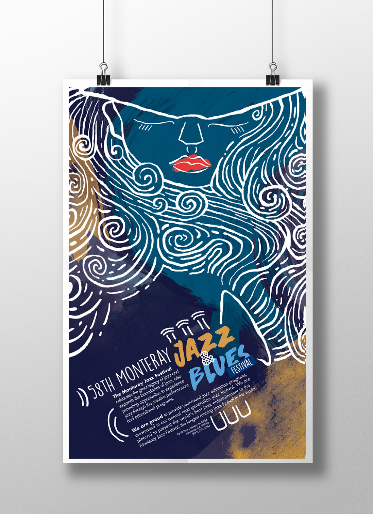

Monteray Jazz and Blues Festival Poster
An illustrative poster made through a combination of Adobe Illustrator, Photoshop, and InDesign.
Print Design Portfolio
A small assortment of some of the print materials I've designed over the years. I have more that I have yet to get photographed which I'm happy to share in person.
Select an icon to view its associated project on the left. Click the project image for an expanded view.
College Portfolio
Monteray Jazz and Blues Festival Poster